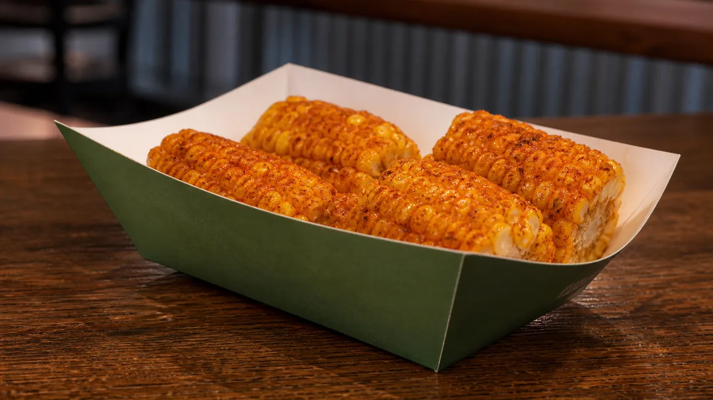

Compare 5-piece and 10-piece Cajun Fried Corn, see the cost per piece, understand the seasoning and choose it confidently against a fries side.

Corn segments coated with Cajun seasoning
Wingstop Cajun Fried Corn is sweet corn cut into small cob pieces, fried and finished with Cajun-style seasoning. The August 2026 snapshot lists 5 pieces for $3.99 with 200 calories and 10 pieces for $5.99 with 400 calories. Prices and menu availability vary by location.
| Size | Price | Listed calories | Snapshot cost per piece |
|---|---|---|---|
| 5 pieces | $3.99 | 200 Cal | About $0.80 |
| 10 pieces | $5.99 | 400 Cal | About $0.60 |
Cost per piece is calculated from the displayed snapshot price and rounded to the nearest cent.
The official Cajun Corn page describes sweet corn with Louisiana-style Cajun seasoning. It also says the seasoning can be customized where the local cart provides that option. The result is sweet, savory and peppery, with a different texture from both fries and loose kernel corn.
The menu item is served on the cob. That means it is finger food and can be messier than fries, especially with extra seasoning or dip.
The 10-piece order doubles the corn and listed calories but costs only $2 more. At the snapshot prices, its cost per piece is about 20 cents lower. Choose 5 pieces for one diner or as a second side; choose 10 when two or more people plan to share.
| Item | Price | Listed calories | Main tradeoff |
|---|---|---|---|
| 5pc Cajun Fried Corn | $3.99 | 200 Cal | Lower listed calories, higher price |
| Regular Seasoned Fries | $2.99 | 500 Cal | Lower price, larger calorie listing |
The corn can provide a lighter listed-calorie side, but “corn” does not mean it avoids the fryer or cross-contact concerns. Any ranch, cheese sauce or other dip must be counted separately.
Fried corn is prepared in restaurant equipment shared with other foods. Wingstop says shared frying oil contains soy ingredients and cross-contact cannot be guaranteed. Seasoning and added dips may introduce further allergens. Review the current official allergen information and ask the selected restaurant about preparation if you have a food allergy.
Choose your Wingstop location to load its current menu and prices.
Open the relevant menu category and select Cajun Fried Corn.
Check the size, included items, nutrition and available customizations.
Select pickup or delivery and review the final cart before payment.
Yes. It is sweet corn cut into small cob pieces, fried and seasoned. It is not a cup of loose corn kernels.
The menu snapshot shows 5-piece and 10-piece orders. The larger order doubles both the pieces and listed calories.
The August 2026 snapshot lists 200 calories for 5 pieces and 400 for 10 pieces, before any dip or extra seasoning.
At the displayed prices, yes. It costs about 60 cents per piece versus about 80 cents for the 5-piece order.
No such guarantee should be assumed. It is a fried item prepared in restaurant equipment shared with other foods, and Wingstop warns that cross-contact can occur.